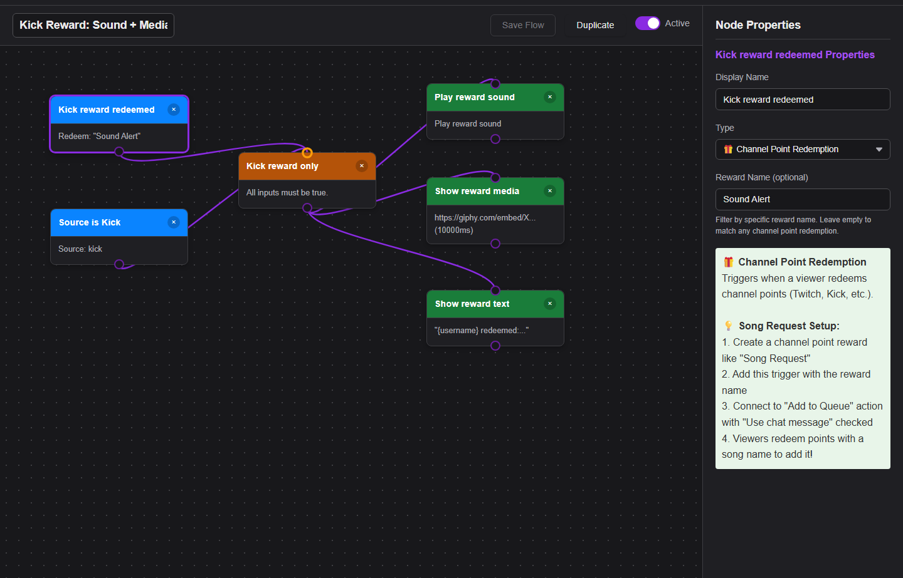

Wofür Event Flow gedacht ist
Eigenen Ablauf über eine Stream-Deck-Taste oder einen HTTP-/WebSocket-/P2P-API-Aufruf ausführen.
Event Flow ist der Editor für erweiterte Automatisierungen. Verwende ihn, wenn Popup-Schalter nicht ausreichen: Chat filtern, Medien auslösen, Nachrichten weiterleiten, Webhooks aufrufen oder OBS steuern.

Vor jeder Anleitung
- Verwende eine Testplattform und eine Social-Stream-Sitzung.
- Öffne das Dock und prüfe, ob Chat ankommt.
- Öffnen
actions.html?session=YOUR_SESSIONwenn das Beispiel Audio oder Medien abspielt oder OBS steuert. - Teste vor dem Livestart mit einer künstlichen Nachricht oder einem sicheren Auslöser.
- Exportiere einen funktionierenden Flow vor einer größeren Änderung.
Ideen für Automatisierungen
| Anleitung | Auslöser | Aktion |
|---|---|---|
| Schlüsselwort-Sound | Nachricht enthält !hype | Audioclip abspielen in actions.html. |
| Medien für Kick-Belohnungen | Belohnungs-/Kanalpunkteereignis | Ein Bild, Video oder einen Sound anzeigen bzw. abspielen. |
| Erstmaliger Chatteilnehmer | Kennzeichen oder Filter für erstmalige Chatteilnehmer | Hebe die Nachricht hervor oder zeige ein Willkommens-Overlay. |
| Spendenmeldung | hasDonation oder Spendenereignis | An ein Meldungs-Overlay, einen Webhook oder eine OBS-Szenenaktion senden. |
| Webhook-Weiterleitung | Plattform-/Typfilter | Sende ausgewählte Nutzdaten per POST an deinen Dienst. |
| Zufällige Soundauswahl | Schlüsselwort + RANDOM-Bedingung | Einen von zwei Clips zufällig abspielen – siehe Micro-Flow D im Editor-Leitfaden. |
Medienbeispiel für Kick-Belohnungen
Dies ist das häufigste praktische Event-Flow-Muster: eine Belohnung erkennen und dann über Flow Actions Medien abspielen.


Ausführlicher Leitfaden: Leitfaden für Sounds/Medien bei Kick-Belohnungen.
Häufige Lösungen
- Nichts passiert: prüfe zuerst, ob das Quellereignis im Dock ankommt.
- Audio oder Medien werden nicht abgespielt: lass
actions.htmlmit derselben Sitzung geöffnet und prüfe dann den Leitfaden zum Medienhosting für Event Flow. - OBS-Aktion schlägt fehl: prüfe OBS WebSocket v5, Port
4455, Passwort und Berechtigungen. - Flow wird zu oft ausgelöst: füge einen strengeren Plattform-, Ereignis-, Schlüsselwort- oder Benutzerfilter hinzu.
Vollständige Referenz: Event-Flow-Editor-Leitfaden.